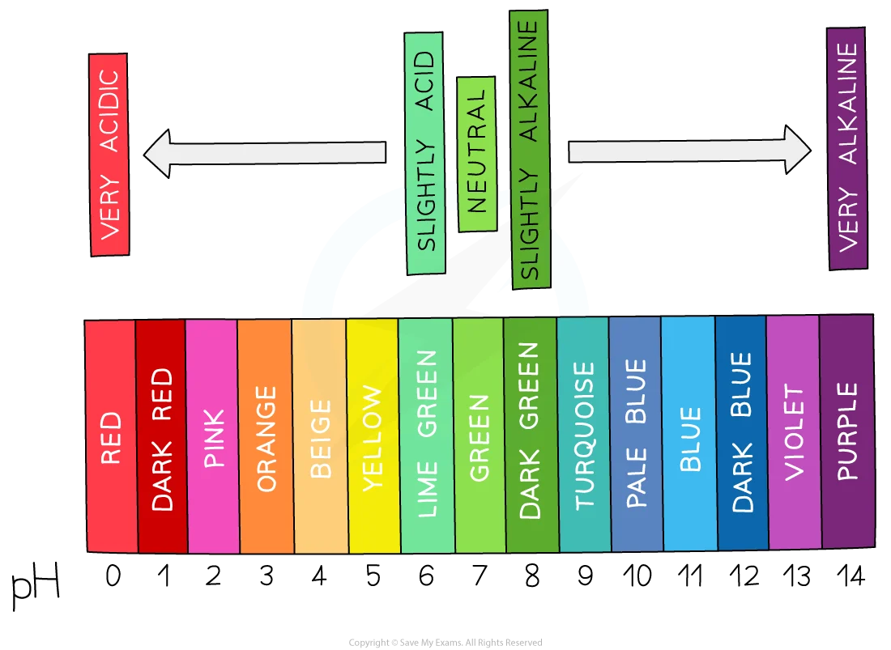
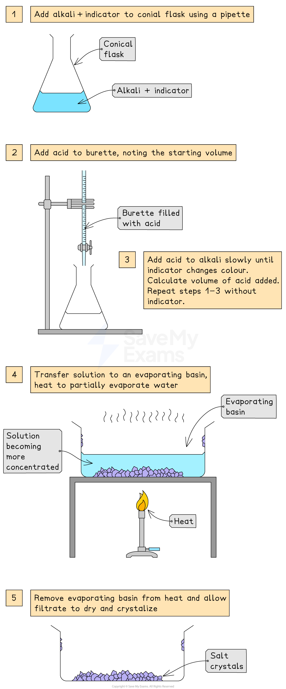

C7.1 The characteristic properties of acids and bases
1 Reactions of acids
(a) With metals:
acid + metal → salt + hydrogen
*Only if metal is above hydrogen in reactivity series*
(b) With bases:
acid + base → salt + water (neutralisation)
(c) With carbonates:
acid + carbonate → salt + water + carbon dioxide (effervescence)
2 Indicators (acids)
Blue litmus → red
Red litmus stays red
Methyl orange → red
3 Bases and alkalis
Bases: metal oxides/hydroxides
Alkalis: soluble bases producing OH⁻(aq)
*All alkalis are bases, not all bases are alkalis*
4 Reactions of bases
Base + acid → salt + water
5 Indicators (alkalis)
Red litmus → blue
Blue litmus stays blue
Methyl orange → yellow
6 pH scale & universal indicator
Universal indicator shows:
pH 0–6 → acidic
pH 7 → neutral
pH 8–14 → alkaline

7 Neutralisation
Acid + alkali → salt + water
Example: HCl + NaOH → NaCl + H₂O
C7.2 Oxides
1 Types of oxides
Non-metal oxides → acidic (CO₂, SO₂)
Metal oxides → basic (CuO, CaO)
2 Amphoteric oxides
React with BOTH acids and bases → salt + water
3 Examples
Al₂O₃ and ZnO are amphoteric
C7.3 Preparation of salts
General method
Make solution → remove excess → evaporate → crystallise → dry
(a) Titration
Acid + alkali (both soluble):
– Use indicator to find volumes
– Repeat without indicator
– Evaporate to get crystals

(b) Excess metal
Add excess metal → filter → evaporate → crystals
(c) Excess insoluble base
Add excess base → filter → evaporate → crystals
(d) Excess carbonate
Add excess carbonate → bubbling CO₂ → filter → evaporate
2 Hydrated vs anhydrous
Hydrated: contains water (CuSO₄·5H₂O)
Anhydrous: no water
3 Precipitation
Mix two solutions → insoluble salt forms
Filter → wash → dry